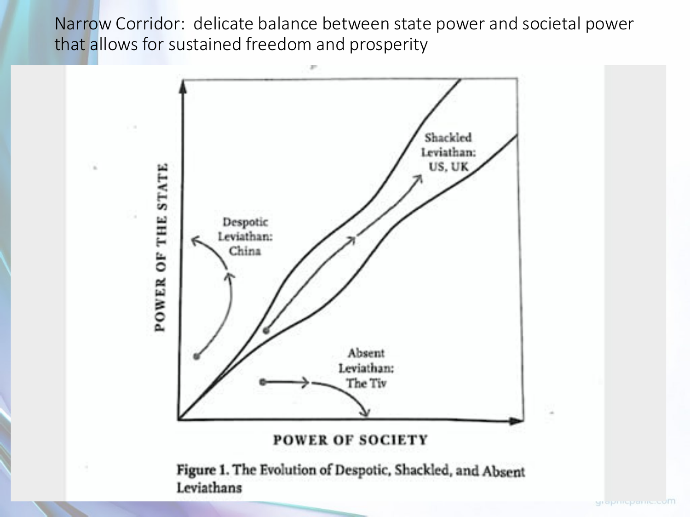
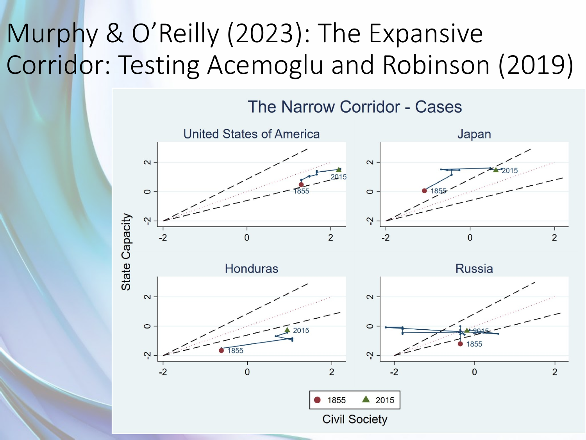

Explain liberty, Leviathans and the cage of norms
Explanation, worked examples and practice
Useful first: Explain institutional persistence and political feedback without determinism, Trace endogenous power, commitment and democratization
Outcome and conditions
Classify the three Leviathans and explain how capacity and norms can protect or dominate, with historical/source qualifications. All essential components listed in metadata are required. Hypothetical assessment values instantiate the checked equations; they are not historical observations or observed outcomes. Independent checks are closed-note and without hints, solution access, external retrieval or other assistance; a basic arithmetic calculator is allowed. Teach establishes and records actual help/exposure conditions before claiming independence.
Prerequisites and checks
Check the prerequisites
- O006 outcome and repair route: the qualitative corridor separates state and societal power.
- O013 outcome and repair route: effective organization and formal constraints interact without automatic benevolent rule.
O014-P1, item_version 1, prerequisite_diagnostic. Prompt: Does state power alone establish a protected society, and does a written constitution exhaust effective power?
Complete key and rubric: O006’s corridor requires societal constraint alongside capacity; O013 distinguishes formal allocation from effective organization/resources. Require both; repair those lessons. Pass requires every requested reason and result; partial for an omitted reason or unresolved isolated arithmetic slip; fail for the conflicting mechanism. This diagnostic never counts as acquisition. Current or explicitly compatible committed independent prerequisite evidence may permit skipping its check; familiarity alone cannot. Use the cited complete prerequisite lesson or the named included foundation, then the worked example, after a partial/failing entry check.
Motivation, intuition, and definitions
Classify the three Leviathans and explain how capacity and norms can protect or dominate, with historical/source qualifications. Establish the definitions, assumptions and relevant comparisons before simplifying an equation. The complete reused passages establish every academic claim, notation choice and qualification assessed here; necessary prerequisites use the complete lessons above.
Explanation steps
Source passage
Origin: reused complete checked passage Liberty, Leviathans and the cage of norms; fingerprint d8467cfbbfbf327692a52af4dc0f820dd58507e3cfb3e430d35147ed2b8a3ce3. Heading depth and required relative figure-path relocation alone are adapted.
Liberty, Leviathans and the cage of norms
Source: Acemoglu Robinson - The Narrow Corridor - chapter 1 Source: Week II - lecture - large slides Source: Week III - lecture - large slides
- Liberty means freedom from domination
- Hobbes's Warre and the economic mechanism
- Capacity can be used for repression
- Norms can create order and a cage
- The Shackled Leviathan
- What the chapter's final outline does—and does not—supply
Can a powerful state protect liberty, and can a society without a state avoid domination? Chapter 1 of The Narrow Corridor rejects a simple choice between total anarchy and an all-powerful ruler. Liberty requires the capacity to control violence and effective constraints on how that capacity is used. The lecture's corridor is a balance between state and societal power, not a formula that state power alone or social cohesion alone creates freedom. The Narrow Corridor, chapter 1, physical PDF pp. 1–3, 23–26 Week III lecture, physical PDF pp. 5–8

This map represents the chapter's three types and two objections to Hobbes. It is a conceptual comparison, not a causal experiment or a country-classification index. The Narrow Corridor, chapter 1, physical PDF pp. 7–11, 16–18, 23–26
Liberty means freedom from domination
The chapter starts with competing visions: Fukuyama's liberal convergence, Kaplan's anarchy and Harari's technology-enabled dictatorship. The authors propose diversity and historical contingency rather than one inevitable “end.” Their Congo “Article 15—fend for yourself” is explicitly a joke, not an actual constitutional provision. The real constitutional promises illustrate the gap between written rights and protection in practice. The Narrow Corridor, chapter 1, physical PDF pp. 1–3
Soyinka's journey through Lagos depicts gangs, predatory roadblocks, missing services and insecurity. The central idea, developed through Pettit's non-domination, is that a person can be unfree even without an actual assault today: another person's arbitrary ability to threaten, punish or withdraw essential protection alters behaviour. A subordinate spouse, worker or debtor may anticipate retaliation and self-censor. Freedom is therefore more than an abstract permission; it includes the practical ability to act without arbitrary domination by state or private actors. These are the book's historical narratives and conceptual examples, not current conditions certified for whole populations. The Narrow Corridor, chapter 1, physical PDF pp. 3–7
Hobbes's Warre and the economic mechanism
Warre includes both actual fighting and the known persistent possibility of violence when no common authority reliably protects people. If harvests, possessions and life can be taken, effort and investment have uncertain private returns. People divert resources into self-protection and avoid travel, commerce and long-lived projects. The economic harm can arise from credible threats even when violence is off the observed path. The Narrow Corridor, chapter 1, physical PDF pp. 7–10
Hobbes's solution is a powerful Leviathan, a state with overwhelming authority to impose order. He allows formation by agreement or conquest and regards monarchy, aristocracy and democracy mainly as different conveniences for wielding sovereign power. The authors accept his insight that avoiding Warre is crucial and that monopolizing violence can reduce killings. They reject two further steps: statelessness does not always mean uncontrolled violence, and a capable state does not automatically protect liberty. The Narrow Corridor, chapter 1, physical PDF pp. 9–11
Capacity can be used for repression
State capacity is the ability to achieve objectives: enforce rules, resolve disputes, tax, regulate, build services or wage war. Bureaucratic means and motivation are crucial; capacity is analytically distinct from the desirability of the objective. The Nazi expulsion machinery and mass murder illustrate capable organization used to dispossess and kill. The Mao-era famine account describes procurement and suppression of criticism; later re-education accounts show coercion is not merely a failure to provide order. They demonstrate why an efficient administrative mechanism need not be welfare-improving. The Narrow Corridor, chapter 1, physical PDF pp. 11–16
The Despotic Leviathan is defined by the absence of effective societal control over state power, not by a threshold number of murders. Repression is possible because the state is unaccountable. The Janus metaphor captures two faces: protection/services and predation/domination. Even a state that suppresses private violence can replace it with state violence. Source-reported atrocity estimates and historical incarceration examples are context for this argument, not newly verified demographic measurements or present-day legal descriptions. The Narrow Corridor, chapter 1, physical PDF pp. 16–17
Norms can create order and a cage
An Absent Leviathan lacks effective centralized authority, but social norms can still coordinate conflict resolution, reciprocity, sanctions and collective defence. The chapter's Akan accounts describe safe commerce and community hearings mediated by elders and shared expectations. These cases refute an automatic equation of statelessness with chaos. They do not establish the absence of hierarchy or coercion. The Narrow Corridor, chapter 1, physical PDF pp. 17–18
The same norms become a cage when conformity, subordination and prescribed roles cannot be freely challenged. In the Asante protection account, attachment to a lineage or powerful person helps guard against raiders but requires obedience; leaving that dependency can expose someone to enslavement. Goi's experience shows slavery and insecurity, while Bwanikwa's pawning illustrates how a nominally redeemable dependency can become lasting bondage. Wards, wives and dependants may receive protection while lacking independent voice. This is the supplied example of one norm system simultaneously reducing danger and restricting liberty. The Narrow Corridor, chapter 1, physical PDF pp. 18–21
The authors also discuss how powerful interpreters can tilt inherited norms in their own favour, including gender hierarchies. Their Pashtunwali example combines hospitality and generosity with revenge obligations and restrictions on women. Read these as the authors' specified historical/social accounts, not as a claim that every member of an ethnic or religious population behaves identically. The mechanism is compulsory unequal dependence, not a judgment inferred from a group label. The Narrow Corridor, chapter 1, physical PDF pp. 22
The Week III lecture adds the Tiv illustration: witchcraft accusations can constrain would-be dominant individuals yet inhibit initiative and centralization. That particular example is supplied by the lecture; detailed later book chapters were not supplied or audited here. The lecture's prebendalism discussion similarly explains officials financing themselves through office revenues/rents: it reduces the ruler's cash-wage needs but can encourage predation. These are institutional trade-offs, not proof that all premodern officials had identical arrangements. Week III lecture, physical PDF pp. 21–23
The Shackled Leviathan
The answer is a state capable of enforcing law and controlling private violence that is itself constrained by an organized, vigilant society. Formal constitutions, elections and review matter, but effective societal ability to complain, organize, contest and remove rulers matters too. This Shackled Leviathan can also loosen oppressive customary constraints. Its coercive potential remains Janus-faced; constraints restrain it rather than erase that potential. The Narrow Corridor, chapter 1, physical PDF pp. 23–26
The Wyoming example links frontier violence, vigilante justice and the 1892 Johnson County conflict to state intervention, then women's voting rights to changes in customary restrictions. Two historical source labels need care: the chapter names William Henry Harrison for 1892, although it was Benjamin Harrison's presidency; its claim that Wyoming was the world's first place to grant women suffrage is too broad. Wyoming's 1869 territorial suffrage and later retention are the relevant institutional example, not an unqualified global-first claim. The Library of Congress Benjamin Harrison guide, Introduction, confirms his 1889–1893 presidency; its Women’s Suffrage classroom passage, “Early Rights,” notes earlier property-qualified female voting in New Jersey until 1807 and Wyoming territorial suffrage in 1869. These bounded checks correct the labels without treating the Johnson County intervention as a neutral, unqualified success. The Narrow Corridor, chapter 1, physical PDF pp. 23–25

The lecture diagram puts state power on the vertical axis and societal power on the horizontal. Moving upward alone can favour despotism; societal constraints without state capacity do not automatically supply security. A balance inside the corridor can support expansion of both. The following empirical illustration plots state capacity and civil society for the US, Japan, Honduras and Russia from 1855 to 2015. Its standardized/abstract axes and selected cases do not themselves identify a causal law or certify all conclusions of the cited Murphy–O'Reilly paper, which is a bibliography lead here. Week III lecture, physical PDF pp. 7–8
What the chapter's final outline does—and does not—supply
The ending surveys later chapters: state-society coevolution, the will to power, economic incentives, European/Chinese/Indian contrasts, conditional structural effects, uneven US capacity and slavery, “Paper” Leviathans, Middle Eastern norms, zero-sum conflict, entry to the corridor and maintaining it as responsibilities expand. These are pointers in the supplied chapter, not ingestion of the later chapters' detailed evidence. The common implication is that building and defending accountable capacity is continuing work; geography or a historical shock does not have one unconditional political effect. The Narrow Corridor, chapter 1, physical PDF pp. 26–30
The core concepts answer the supplied questions: Warre discourages economic activity through insecurity; Hobbes is right about the importance of order but overstates the necessity and benignity of sovereign power; Absent, Despotic and Shackled types differ in effective capacity and constraints; the cage can protect people while binding them to unequal roles. The historical cases make those distinctions usable without turning them into inevitable country destinies. Week II lecture, physical PDF pp. 3 Week III lecture, physical PDF pp. 5 The Narrow Corridor, chapter 1, physical PDF pp. 7–26

The lecture’s selected four-country trajectories use state-capacity and civil-society indices. Treat the curves as the cited illustration; they are not an independently audited identification design. Week III lecture, physical PDF pp. 8
Worked example
O014-W1, item_version 1, worked_example. Prompt: Compare hypothetical communities Alder (no central authority, safe trade through elders but compulsory dependent status), Birch (effective coercive bureaucracy without accountability), and Cedar (capable enforcement with organized citizens able to challenge rulers and oppressive custom). Classify Leviathans and explain non-domination, Warre and investment, capacity’s two faces, the cage of norms/Asante protection, corridor axes and continuing contestation. Qualify historical examples, source corrections, later-chapter leads and the four-country graph.
Complete solution and essential rubric: Alder illustrates an Absent Leviathan: norms can provide order while caging dependants, so statelessness need not mean constant violence. Birch illustrates a Despotic Leviathan: capacity can protect or repress and is distinct from desirable objectives. Cedar illustrates a Shackled Leviathan: state capacity controls private violence while organized society constrains state power and can loosen customary domination. Liberty is practical freedom from arbitrary domination even without an assault today. Hobbes’s Warre includes persistent credible threats that discourage travel, commerce and long-lived investment and divert resources into protection. Order matters, but unaccountable sovereignty need not be benign. Asante attachment can reduce enslavement risk while demanding obedience; exit may expose vulnerability. Akan, Pashtun, Tiv and prebendalism examples are bounded accounts, not uniform ethnic/current-country claims. State power is vertical and societal power horizontal in the corridor; increasing state power alone can favour despotism, while society alone need not ensure security. Continuing organization matters alongside written rights. Congo Article 15 is a joke, not a constitutional law. The 1892 Wyoming context concerns Benjamin Harrison, not William Henry Harrison; 1869 territorial suffrage is not an unqualified world first. The 1855–2015 four-country index trajectories are a cited illustration, not an audited causal design. Later chapters remain pointers; no necessary country development sequence follows. All requested calculations, derivations and qualifications are essential; the component map above applies to every full form.
Practice with fading assistance
Write your reasoning, then reveal the complete key to check each step.
A local draft for your own study.
Reveal explanation
Complete solution and essential rubric: Delta illustrates an Absent Leviathan: norms can provide order while caging dependants, so statelessness need not mean constant violence. Elm illustrates a Despotic Leviathan: capacity can protect or repress and is distinct from desirable objectives. Fir illustrates a Shackled Leviathan: state capacity controls private violence while organized society constrains state power and can loosen customary domination. Liberty is practical freedom from arbitrary domination even without an assault today. Hobbes’s Warre includes persistent credible threats that discourage travel, commerce and long-lived investment and divert resources into protection. Order matters, but unaccountable sovereignty need not be benign. Asante attachment can reduce enslavement risk while demanding obedience; exit may expose vulnerability. Akan, Pashtun, Tiv and prebendalism examples are bounded accounts, not uniform ethnic/current-country claims. State power is vertical and societal power horizontal in the corridor; increasing state power alone can favour despotism, while society alone need not ensure security. Continuing organization matters alongside written rights. Congo Article 15 is a joke, not a constitutional law. The 1892 Wyoming context concerns Benjamin Harrison, not William Henry Harrison; 1869 territorial suffrage is not an unqualified world first. The 1855–2015 four-country index trajectories are a cited illustration, not an audited causal design. Later chapters remain pointers; no necessary country development sequence follows. All requested calculations, derivations and qualifications are essential; the component map above applies to every full form.
Allowed support is the first stated identity only; hide the remaining key while the learner completes it. Supported performance is practice, not an independent result.
Rubric and independence
Self-assessment criteria and tutor checks
Required components: non_domination_warre_and_capacity, absent_despotic_shackled_and_norms, corridor_historical_qualifications_and_scope. Each full prompt/key below elicits every component; all are necessary for a pass on every permitted pair. Accept algebraically equivalent expressions and clearly defined opposite cash-flow signs with correct interpretation. A pass requires all requested outputs/reasons, correct units/assumptions and no critical conceptual error. Partial means a missing component or an unresolved isolated arithmetic slip with an otherwise valid method; independent correction is required for a pass. Fail means a critical mechanism/condition is wrong. Unscorable means a response or its help/exposure conditions cannot be established. Unknown help conditions are never independent evidence.
Critical errors: No state implies chaos; strong state implies liberty; norms assumed egalitarian; later chapter leads treated as checked details.
Acquisition requires two distinct unused unassisted full checks selected from the six exact metadata routes. Every I/D form covers all components; W1, S1, the prerequisite and C1 are forbidden substitutes. A D form used for acquisition cannot later be counted again as delayed success. No teach-generated item may replace a named full check; additional verified explanation/practice is allowed under the unchanged method and may not fabricate evidence. If fewer than two fresh forms remain for acquisition, return a plan_issue for an additional prepared bank.
| Component | I1 | I2 | D1 | D2 |
|---|---|---|---|---|
| non_domination_warre_and_capacity | required | required | required | required |
| absent_despotic_shackled_and_norms | required | required | required | required |
| corridor_historical_qualifications_and_scope | required | required | required | required |
Misconceptions and correction
An observed omitted term/sign is tentative until the learner explains it; compare the reasoning with the critical errors above. Score the original response before providing help. Route a conceptual failure to the relevant included derivation and prerequisite, then use an unused full form.
O014-C1, item_version 1, narrow_correction. Prompt: If no abuse occurs this week but a patron can arbitrarily withdraw essential protection, is domination absent? Key/rubric: No. Practical dependence and a credible arbitrary threat can constrain behaviour without an observed assault; liberty is non-domination, with effective protection and constraints needed. Pass requires all keyed reasoning; partial for a missing part; fail for the conflicting mechanism. This repairs a common inference only; it cannot substitute for a full numerical/capability check.
Give at most two hints (first identify the date/unit, second point to the included identity); after ineffective hints show the relevant worked step. After two unsuccessful independent attempts stop repeated quizzing, revisit the explanation/prerequisite and preserve the unresolved status.
Immediate and delayed checks
Write your reasoning, then reveal the complete key to check each step.
A local draft for your own study.
Reveal explanation
Complete solution and essential rubric: The worker’s anticipation of arbitrary permit withdrawal can constrain action without a withdrawal today: non-domination is more than written permission or the current assault count. Persistent threats to returns discourage travel, trade and long-lived investment and induce self-protection, the economic logic of Warre. Tax collection shows a capacity, but the lack of effective challenge makes the Despotic Leviathan most consistent; capability does not imply benign use. An Absent Leviathan would lack effective central authority, potentially with norm-based order; a Shackled one would combine capable protection with effective societal constraints, not just a constitution. Norms can coordinate safety yet impose compulsory status: Asante protection through a lineage/patron can reduce raiding danger while requiring obedience and making exit risky. Thus order alone does not settle liberty. State power is the vertical axis and societal power horizontal; an upward move alone cannot establish the corridor. Janus-faced capacity can supply services or repress. Wyoming’s 1892 presidency was Benjamin Harrison’s, and 1869 territorial suffrage is not an unqualified world first; these corrections do not turn the intervention into a neutral success proof. The 1855–2015 four-country index paths are a cited illustration, not an audited causal design, and later chapter details remain pointers. Require the permit-specific threat analysis, all three type distinctions, norms/capacity mechanism and evidence/scope corrections.
I1/I2 are immediate checks; D1/D2 are distinct parallel variants reserved where possible for delayed checks. A delayed success requires an unused form before recap, no help/solution access, and at least 24 actual elapsed hours after acquisition and the most recent relevant teaching/solution exposure. Record intervening exposure. A calendar-date change alone is insufficient; an early D attempt is immediate evidence only.
A local draft for your own study.
Reveal explanation
Complete solution and essential rubric: Quiet commerce without central authority shows that an Absent Leviathan need not mean constant chaos; it does not establish liberty or the universal dispensability of state capacity. Protection conditional on patron obedience is a cage: arbitrary dependence and dangerous exit constrain conduct before an attack occurs. Warre includes the known possibility of violence that makes investment and travel unsafe. Courts with real protective capacity plus effective open societal contestation could move toward a Shackled Leviathan; mere administrative power without constraints could instead be Despotic. Capacity has protective and predatory faces, so the proposal must be assessed on actual enforcement and challenge, not its stated benevolence alone. The Asante account joins protection with subordination; Tiv accusations can constrain aspiring dominance yet inhibit initiative/centralization, and prebendal finance can reduce cash-wage needs while encouraging predation. These are bounded source accounts, not uniform ethnic or timeless rules. On the diagram, state power is vertical and societal power horizontal; organized norms alone do not replace capable public protection, nor does upward capacity alone secure freedom. Congo Article 15 is explicitly a joke, not law. The four-country trajectories cannot identify the proposed court reform’s causal effect; later chapters are only surveyed leads. Wyoming’s 1869 example and the Benjamin Harrison correction likewise remain qualified historical illustrations. Require the stateless-order-versus-liberty diagnosis, prospective institutional contrast, full type/capacity distinctions and scope/attribution limits.
A local draft for your own study.
Reveal explanation
Complete solution and essential rubric: Effective road protection is missing despite formal rights and organization. Merchants respond to a credible threat even when a particular trip has not been attacked; insecure returns discourage commerce and long projects and divert resources to defence. The first stage does not meet the combined-capacity-and-constraint requirement for a Shackled Leviathan; it has an absent/ineffective central-protection feature, and the qualitative model is not determined by the election label alone. Courts and policing under effective societal control can support a Shackled arrangement and loosen arbitrary customary dependency. The same capacity without challenge could be Despotic, so increased enforcement alone is not sufficient. Absent states can have norm-based order, but Asante-type patron protection may require unequal obedience and dangerous exit; protection and non-domination differ. State power is vertical and societal power horizontal; improvement in both can be compatible with the corridor without making a trajectory inevitable. Janus-faced capacity requires continuing contestation, not merely adopting the proposal. Wyoming’s 1869 suffrage is not an unqualified world first, its 1892 president was Benjamin Harrison, and source intervention narratives remain qualified. The four-country 1855–2015 indices illustrate selected trajectories rather than identify this reform, while later book chapters are pointers. Require the stage-specific diagnosis, threat/returns mechanism, all type/norm distinctions and limits on inferred transition success.
A local draft for your own study.
Reveal explanation
Complete solution and essential rubric: The Nazi example demonstrates capable machinery used for dispossession and killing, not a definition based on a murder threshold or low observed violence. Despotic power is unaccountable to effective societal control; a state can suppress private attacks while dominating people itself. Liberty means freedom from arbitrary dependence, including anticipated retaliation without an attack today. Warre’s persistent known danger undermines expected returns, commerce and investment even between battles. An Absent Leviathan lacks effective central authority but can have orderly norms; Asante protection can simultaneously reduce danger and cage dependants through obedience and costly exit. A Shackled Leviathan combines public capacity with organized continuing constraints and can challenge oppressive custom; Wyoming is a qualified illustration of that possibility, not automatic emancipation by any state. State power is vertical, societal power horizontal; rising only vertically can increase unaccountable capacity rather than secure the corridor. Its Janus faces must be judged separately from administrative effectiveness. Correct 1892 to Benjamin Harrison and qualify the 1869 world-first statement; Congo Article 15 is a joke. The four-country index illustration is not an identified causal law and the later-chapter outline is not supplied detailed evidence. Require corrections tied to each essay claim, full type and norm distinctions, threat/investment reasoning and empirical/historical restraint.
Content provenance and generation boundaries
Sources and scope
Explanations, figures and qualifications above reuse complete checked-note sections with exact origin/fingerprint; heading depth alone is adapted. Main exercises and worked arithmetic are plan-created hypothetical instantiations of those displayed identities. No additional academic claims or external course scope are introduced. Preserve the note conventions and explicit qualifications; checked references reused from notes are not an independent raw-source audit by plan. New numerical practice can use the same method only after its complete solution and unchanged components are checked before display; it cannot replace this lesson’s named evidence forms. Prerequisites route to the complete prepared lessons above.